My Footprints
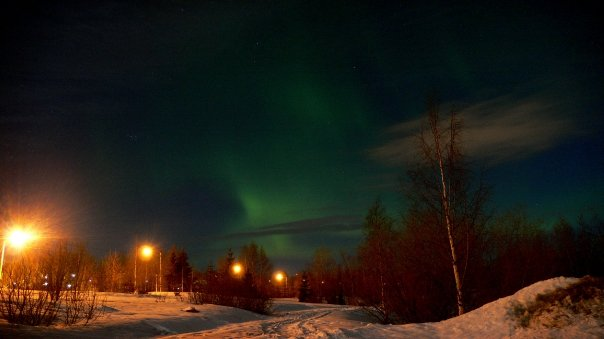
Aurora in Rovaniemi, Finland
Spring 2008
Tulips in Amsterdam, the Netherlands
Spring 2008
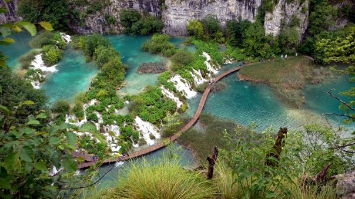
Plitvice Lakes National Park, Croatia
Spring 2008
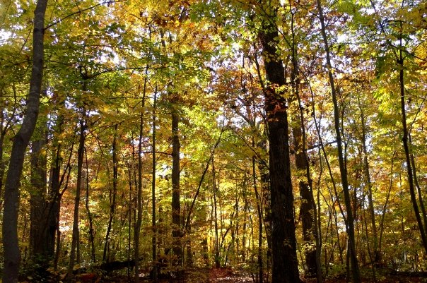
Fall Foliage in Chapel Hill, NC
Fall 2008
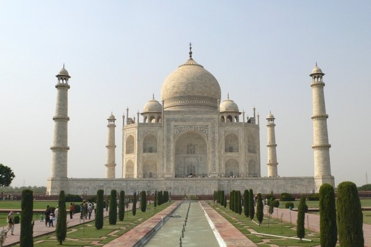
Taj Mahal, India
Summer 2009
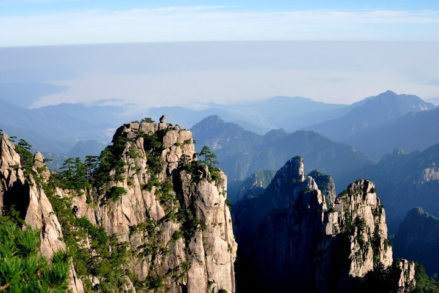
Huangshan, China
Summer 2010
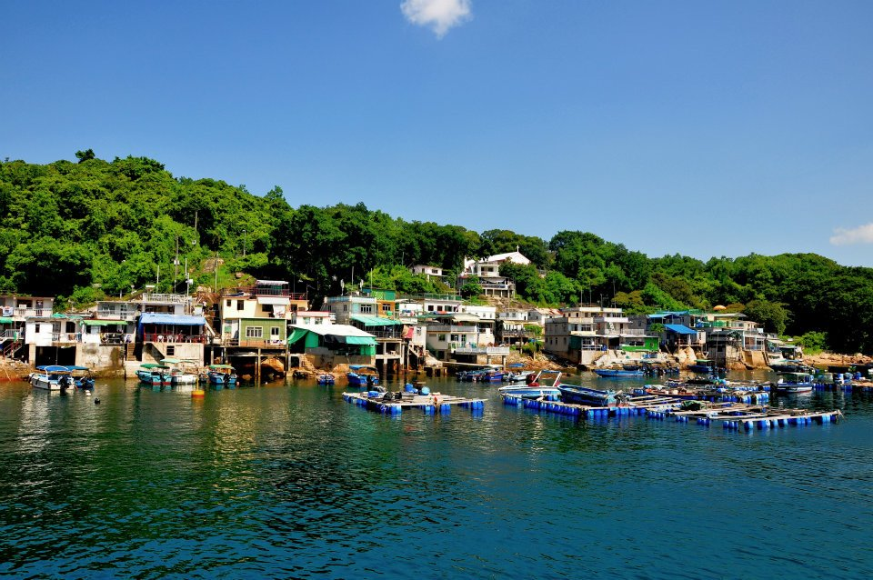
Tap Mun, Hong Kong
Summer 2011
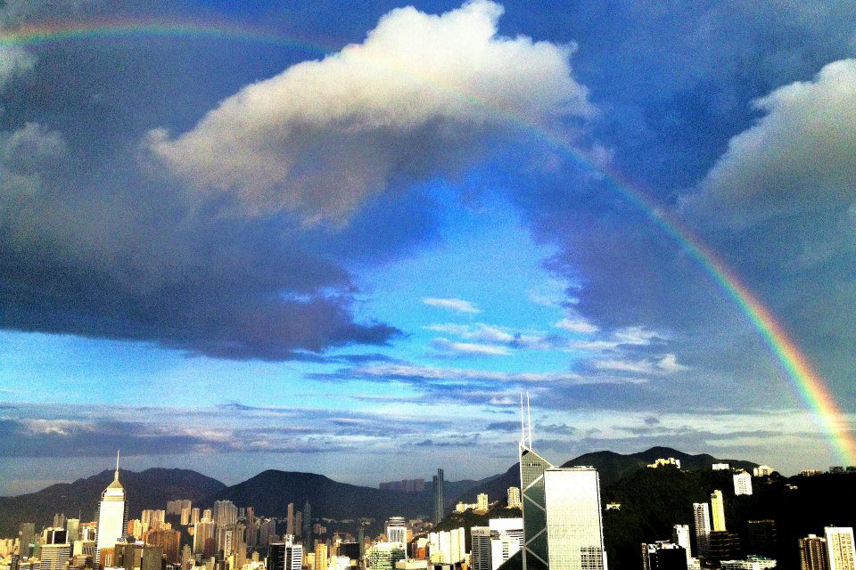
Rainbow in Metropolitan Hong Kong
Summer 2012
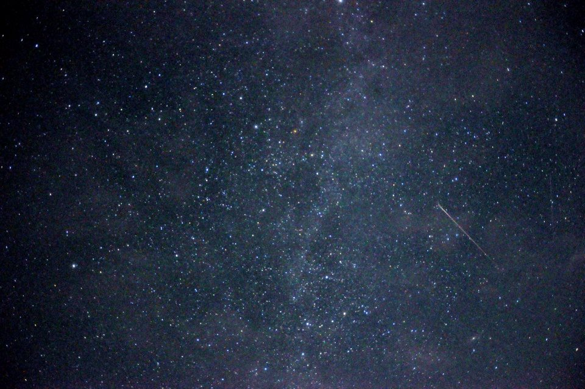
Milky Way and Shooting Star in Inner Mongolia
Summer 2012
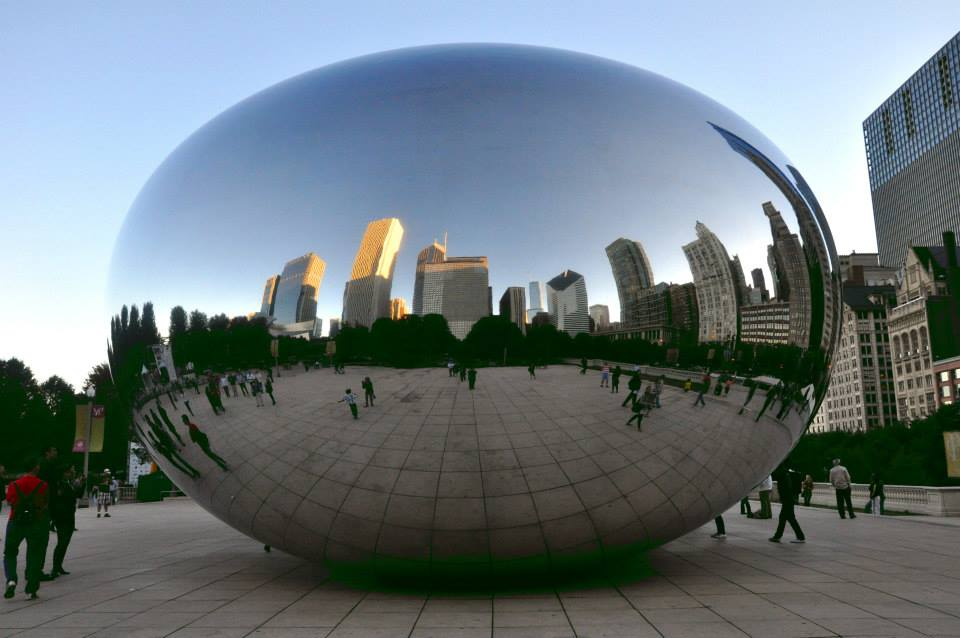
Chicago
Fall 2013
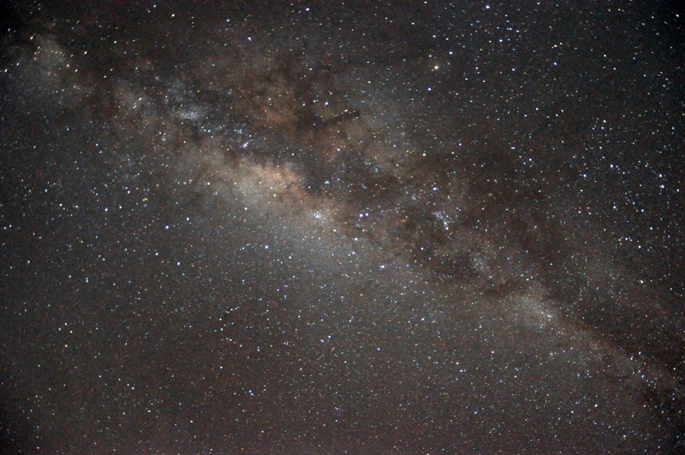
Milky Way in San Pedro de Atacama, Chile
Summer 2014
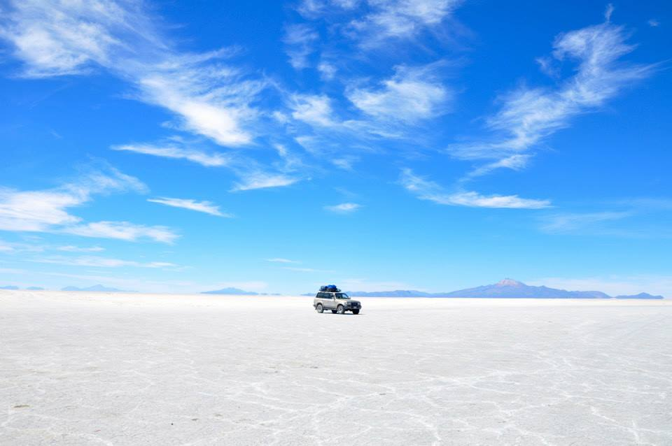
Uyuni, Bolivia
Winter 2014
Cheetahs in Maasai Mara, Kenya
Summer 2015
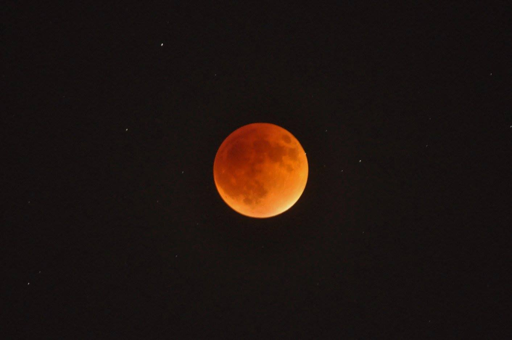
Total Lunar Eclipse in Evanston, IL
Fall 2015
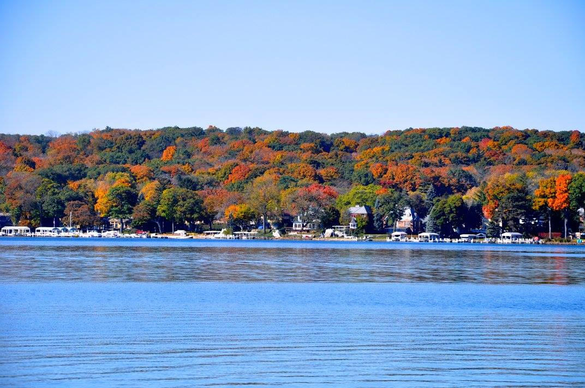
Fall Foliage in Lake Geneva, WI
Fall 2015